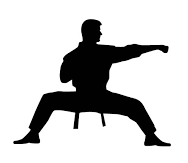
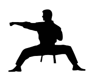
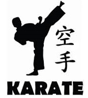
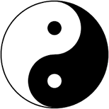
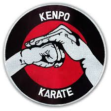

Martial arts are codified systems and traditions of combat practices, which are practiced for a number of reasons: as self-defense, military and law enforcement applications, mental and spiritual development; as well as entertainment and the preservation of a nation's intangible cultural heritage.
Although the term martial art has become associated with the fighting arts of eastern Asia, it originally referred to the combat systems of Europe as early as the 1550s. The term is derived from Latin, and means "arts of Mars", the Roman god of war.[1] Some authors have argued that fighting arts or fighting systems would be more appropriate on the basis that many martial arts were never "martial" in the sense of being used or created by professional warriors.[2]
List of Martial Arts
There are a large number of distinct styles and schools of martial arts. Sometimes, schools or styles are introduced by individual teachers or masters, or as a brand name by a specific gym. Martial arts can be grouped by type or focus, or alternatively by regional origin.
Karate - Japan

Karate (空手) (/kəˈrɑːti/; Japanese pronunciation: [kaɾate] (About this soundlisten); Okinawan pronunciation: [kaɽati]) is a martial art developed in the Ryukyu Kingdom. It developed from the indigenous Ryukyuan martial arts (called te (手), "hand"; tii in Okinawan) under the influence of Chinese Kung Fu, particularly Fujian White Crane.[1][2] Karate is now predominantly a striking art using punching, kicking, knee strikes, elbow strikes and open-hand techniques such as knife-hands, spear-hands and palm-heel strikes. Historically, and in some modern styles, grappling, throws, joint locks, restraints and vital-point strikes are also taught.[3] A karate practitioner is called a karateka (空手家).
Kung Fu - China

Kung fu/Kungfu or Gung fu/Gongfu (/,ck(c�b,8fu-0/ (About this sound listen) or /,ck(a�b,8fu-0/; R9fY2b, Pinyin: g�dngfu) is a Chinese term referring to any study, learning, or practice that requires patience, energy, and time to complete. In its original meaning, kung fu can refer to any discipline or skill achieved through hard work and practice, not necessarily martial arts. The Chinese literal equivalent of "Chinese martial art" would be N2dVfdk66g2f zh�dngguó w�4shù.[1]
The contemporary Chinese term for the modern symbol is Y2ag81Q69Q00Vfe "two-part Taiji diagram". Unicode features the "yin-yang symbol" in the Miscellaneous Symbols block, at code point U+262F (YIN YANG &2f)
Taekwondo - Korea
 Taekwondo (RP: /,cta&a kw%2n ,8do(a/ ty-kwon-DOH[1] or /,cta&a ,8kw%2n do(a/ ty-KWON-doh,[2] US: /,cta&a kw%1-0n ,8do(a/ ty-kwahn-DOH;[3] from Korean taegwondo [t+0%b.k48w(cn.do] (About this sound listen)) is a Korean martial art, characterized by its emphasis on head-height kicks, jumping and spinning kicks, and fast kicking techniques. Taekwondo was developed during the 1940s and 1950s by various martial artists who combined elements of karate and Chinese martial arts with traditional Korean martial arts traditions such as Taekkyeon, Subak, and Gwonbeop.[4][5] The oldest governing body for taekwondo is the Korea Taekwondo Association (KTA), formed in 1959 through a collaborative effort by representatives from the nine original kwans, or martial arts schools, in Korea.
Taekwondo (RP: /,cta&a kw%2n ,8do(a/ ty-kwon-DOH[1] or /,cta&a ,8kw%2n do(a/ ty-KWON-doh,[2] US: /,cta&a kw%1-0n ,8do(a/ ty-kwahn-DOH;[3] from Korean taegwondo [t+0%b.k48w(cn.do] (About this sound listen)) is a Korean martial art, characterized by its emphasis on head-height kicks, jumping and spinning kicks, and fast kicking techniques. Taekwondo was developed during the 1940s and 1950s by various martial artists who combined elements of karate and Chinese martial arts with traditional Korean martial arts traditions such as Taekkyeon, Subak, and Gwonbeop.[4][5] The oldest governing body for taekwondo is the Korea Taekwondo Association (KTA), formed in 1959 through a collaborative effort by representatives from the nine original kwans, or martial arts schools, in Korea.
Kenpo - USA

American Kenpo (/,8k%bmpo(a/, pronounced KeMpo) is a martial art characterized by the use of quick and powerful strikes delivered from all of the body's natural weapons, powered by rapid stance transitions. The beginner is introduced to numerous basics that comprise the system taught through the vehicle of scripted ideal scenarios that give instructors a platform from which to introduce the concepts and principles that Ed Parker emphasized in his teachings of American Kenpo.